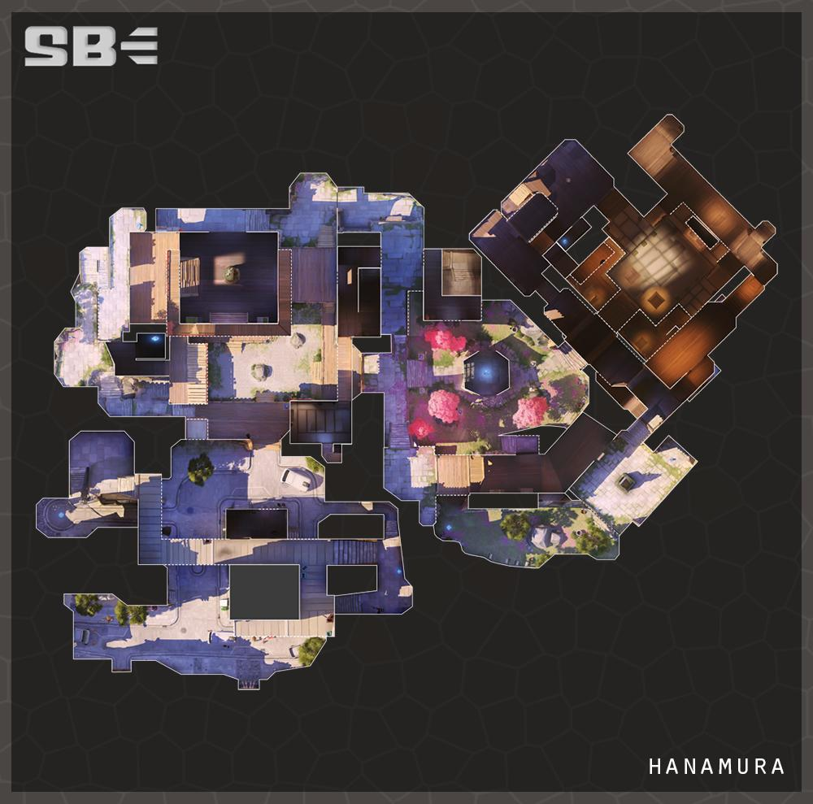

花村 Hanamura 回首頁
回首頁
花
村是一個保存完好的村莊，擁有不起眼的商店和安靜的街道，以其每年春天都如田園詩般的盛開的櫻花節而聞名。
但對於那些了解其歷史的人來說，花村是島田忍者家族的祖先家園，憑藉著幾個世紀以來的壯大，島田家族已經成長為
一個擁有力量的犯罪組織。隨著鄰近城市的擴張，花村被其所包圍，最終它成為一個更大的城市。目前，島田家族雄偉
壯觀的大院空無一人，但這種和平可能很快就會破裂。
花村位於日本，是一個擁有寺廟場地和島田城堡的廣大郊區。花村擁有餐廳，商店和櫻花盛開的景點，是一個受歡迎的旅
遊目的地，但沉睡的小鎮隱藏著一個只有少數人知道的黑暗秘密。
幾代人以來，該村一直是島田氏族的家園，半藏和源氏曾經屬於這個家族。
